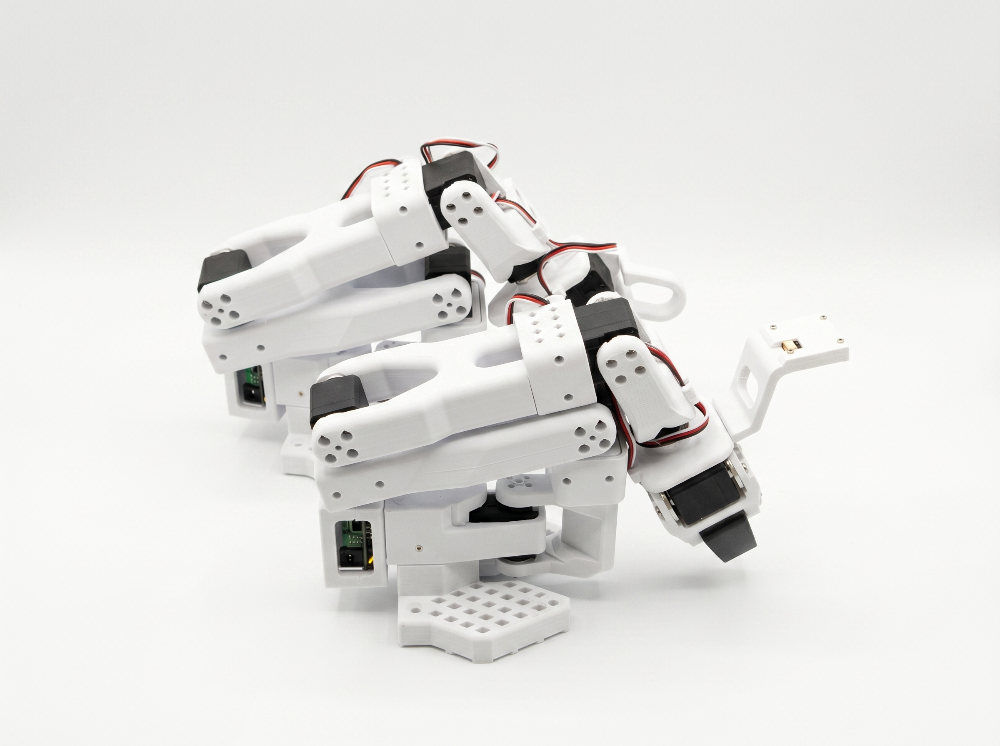

SO-101.
Move the leader by hand. The follower mirrors you. Record demonstrations, train a policy, and turn a desktop robot arm into a practical physical-AI lab.
Built to teach by showing.
SO-101 is a paired teleoperation system. Guide the low-resistance leader arm through a task; the follower reproduces the motion while MakerMods Lab captures the camera views, observations, and actions that become training data.
 OpenBooth · SO-101 skill lab
OpenBooth · SO-101 skill lab
Give every task the same stage.
OpenBooth adds a controlled workspace, two cameras, and a public catalog of recorded SO-101 skills. Start from community data, then record the demonstrations your next behavior still needs.
- 01Consistent camera views and background
- 02Single-arm or bimanual SO-101 configurations
- 03Public skills hosted on Hugging Face
Documented all the way down.
Hugging Face documents the SO-101 setup, while the open hardware repository publishes the parts and build files behind the arm.
The open desktop learning arm.
A repairable structure, off-the-shelf servos, and published build files keep the system understandable from the gripper to the training workflow.